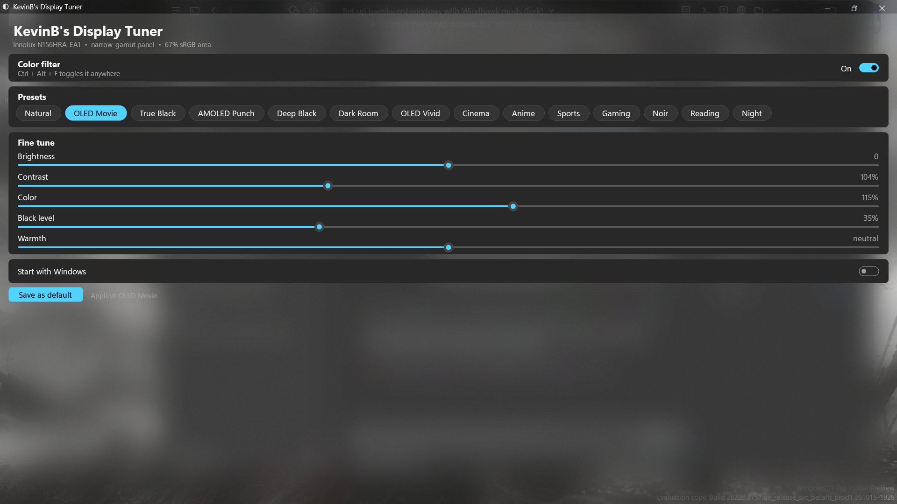

Tuning effects that bring an ordinary LCD or IPS display closer to the look of OLED and AMOLED: richer color, deeper blacks, tuned automatically for your panel.

Original on the left, Display Tuner on the right. Pick a scene and a preset. Made with the app's exact color math, since screenshots can't capture the live filter.
Peaky Blinders S6E6 © BBC / Caryn Mandabach Productions.
Everything you need to make movies look their best on the screen you already have.
Reads the data every display reports about itself (EDID): maker, model and color primaries.
Washed-out panels get more color, wide-gamut ones get little. OLED screens skip black deepening.
Only the darkest tones are pulled down, so dark scenes gain depth without the picture going dim.
Applies screen-wide: video players, browsers, streaming. Ctrl Alt F toggles it.
One 48 KB file. Settings live next to it. Nothing installed, nothing left behind.
Exit the app and your colors return to normal instantly. No drivers, no system changes.
Fourteen presets, each tuned to your panel. Fine-tune brightness, contrast, color, black level and warmth, then save your own default.
The everyday pick for films and series.
Deepest blacks: closest to OLED on an LCD.
True-black depth plus phone-style color.
Strong black level for night scenes.
Deep and slightly dim for lights-off viewing.
Extra pop with a cool tone.
Gentle color, warm film-like white.
Bright, saturated color.
Crisp contrast, cool daylight tone.
More color without losing shadow detail.
Black and white for classic films.
Softer color, warm white.
Warm and dimmer, easy on the eyes.
Your screen exactly as it was.
No drivers and no hacks: just two features built into Windows, driven by your display's own data.
Finds the active monitor's EDID through WMI and the registry, then measures the area of its color triangle against sRGB.
Builds one 5×5 color matrix (saturation, contrast, brightness, warmth) and applies it to the whole screen with the Magnification API.
Bends only the darkest ~20–30% of tones on the display's gamma ramp, so mid-tones and highlights stay untouched.
| Your panel | Color area vs sRGB | Extra color | Black level |
|---|---|---|---|
| Narrow-gamut IPS/TN (typical budget laptop, “45% NTSC”) | under 75% | +15% | on |
| Mid-gamut | 75–95% | +8% | on |
| sRGB panel | 95–120% | +4% | on |
| Wide-gamut (DCI-P3 and up) | over 120% | none | on |
| OLED | any | by gamut | off (already true black) |
Build it yourself with the compiler that ships with Windows:
git clone https://github.com/KevinLeve/DisplayTuner
cd DisplayTuner
powershell -ExecutionPolicy Bypass -File build.ps1No LCD can turn its backlight off per pixel, so true OLED black isn't possible. Display Tuner gets you visibly closer: richer color and deeper near-blacks, tuned for your panel.
The app isn't code-signed, so Windows doesn't recognise the publisher yet. Choose More info → Run anyway, or build it from source.
The filter changes what the screen shows, not the image itself, so captures and recordings keep the original colors.
It works in browsers and video players. Some DRM-protected players and exclusive-fullscreen games may bypass the filter.
Press Ctrl Alt F, pick Natural, or exit from the tray icon. Colors return to normal instantly.
The filter applies to every screen; presets are tuned for the main display.
Download, double-click, pick a preset. That's it.